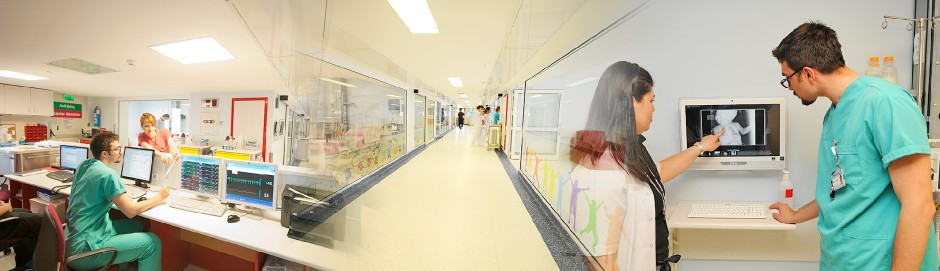

The Center for Life Support Practice and Research (LSC)
- Established in 14/10/2015 with the Senatus Consultum of Hacettepe University.
- Council of High Education approved the foundation in 13/04/2016.
- Legislation Textus was published in The Government Gazette in 23/10/2016 with the registry number 29866.
- Prof. Benan Bayrakci was appointed as the Administrative Principal in 02.08.2021.
- Steering committee was assigned in 01.09.2021.